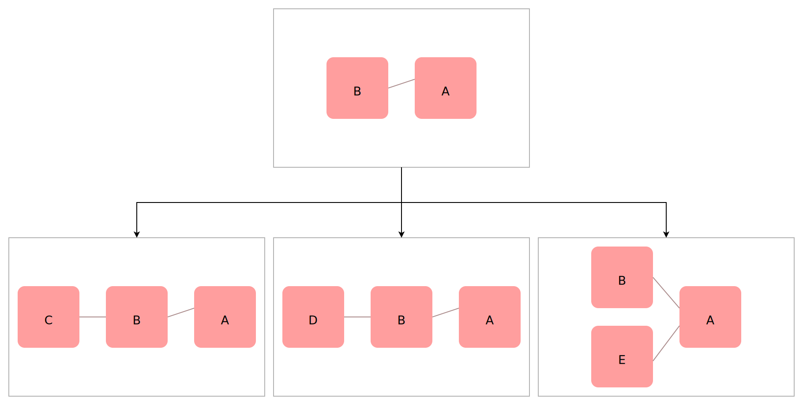

Node Graphs

NG-HASTE generates algorithms through the act of growing node graphs. A node graph is a collection of nodes and connections which describe how information should be passed through a algorithm. Each node can be thought of as a function while each connection can be thought of as data object being passed around.
In the image to the right, we have an example of a simple node graph. Each box represents a function while each connection between the boxes represents data flowing from function to function. Each function takes in a set of input variables and exports a set of output variables. NG-HASTE doesn't care about what the implmentation of a function is, simply what goes in and what comes out. (Additional optimizations can be made by allowing axioms to know the implmentation, but this is not required. More detail explained later.)
For the sake of simplicity, this example only shows variables being used once when passing between functions, however, variables can be used any number of times by adding more connections. When creating connections, an output variable coming from a function can be used any number of times. However, an incoming variable to a function may only have one value.
While there are many different ways a node graph can be created or used, NGHASTE has a few specific rules for what determines whether or not a node graph is valid. An invalid node graph will never be proposed as a solution.
-
The graph cannot contain any circular dependencies.
- No output of a node cannot directly or indirectly connect back into it's inputs.
-
All inputs of a function must be satisfied for the graph
to be complete.
- If a function requires two inputs, but only one is provided, the graph is considered uncompilable.
-
There is only one output node.
- This node can still have any number of input parameters. The purpose of this node is to determine the shape of the tree and can be used to run the tree to determine its state.
-
No node is considered part of the graph unless at least
one output is used.
- This excludes the output node. For all other nodes, the node is simply ignored if it's not being used. If you need to preform a function on an object that returns no value, the function can simply return the object it acted upon.
Parsing a Node Graph
Parsing a node graph is very simple and straight-forward. Information is always moving from left to right. The order in which functions are executed doesn't matter, as long as all parent nodes of a function are executed before the child. After all, you can't pass inputs to a function unless you know what those inputs are. Each connection is a value type variable, so we never have to worry about race conditions if we decide to parallelize the function.
The Search Tree
The main function of NG-HASTE is the search tree. By taking the full search space of all possible algorithms that can be generated and forming those into the shape of a search tree, we can search through it much easier. It also allows us to prune out branches which won't help us or prioritize branches that will help more.
Logical Axioms
To do.
Heuristics
To do.
Solution Tests
To do.
Fitness Functions
To do.